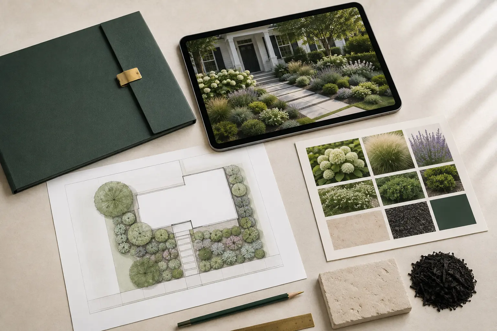

The uncertainty
Plant lists, materials and layout ideas are difficult to judge in isolation.
Orlano Gardens is an independent remote design studio helping homeowners turn real photos and priorities into clear outdoor design direction.

Outdoor projects become expensive quickly. A visual direction makes choices more deliberate.
Plant lists, materials and layout ideas are difficult to judge in isolation.
Start with actual property photos, priorities, constraints and local context.
Compare a visual direction before committing money, labor and permanent choices.
The work stays focused on remote visual design and practical decision support.
These standards keep the work useful, grounded and honest.
Design from the supplied photos and visible conditions—not a generic template.
Consider growth, clearance, circulation and long-term relationships.
Prioritize a coherent direction instead of filling every area.
Pair the visual concept with plant, material and placement guidance.
Separate visualization from installation, engineering and site verification.

Photos, video, measurements, location and priorities.
Agree the scope before payment.
Build concepts around real limits.
Receive visuals and guidance in 3–5 working days after complete inputs.
Different spaces and priorities—each one begins with the property rather than a pre-made look.

Curb appeal, scale, access and planting structure.

Zones, circulation, privacy and outdoor use.

Garden beds, entries and small high-impact spaces.
The images helped me clearly visualize my front yard, and I’m excited to bring it to life.Keilana / Verified Etsy review
Concept imagery is AI-assisted digital visualization—not a photograph of completed installation.
Final choices should be checked against local climate, utilities, codes, product instructions and site conditions.
View Verified Etsy ReviewsShare clear photos and priorities so the correct scope can be confirmed before Etsy checkout.